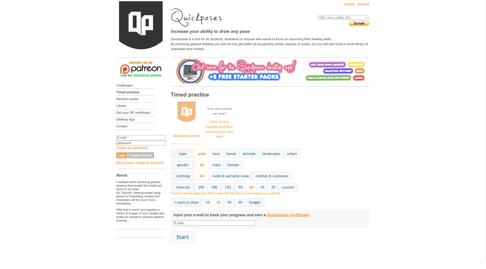
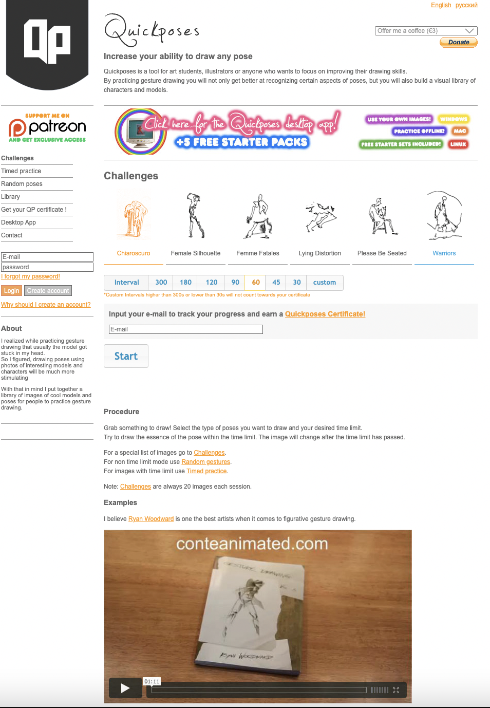

Responsive Redesign
Redesigning a webpage to be more user friendly and responsive to different screen sizes.

Website Introduction
- Quickposes is a website that provides free images for anyone to practice their drawing skills
- Users can customize their drawing sessions by selecting the subject they would like to draw, practice duration, and number of images
- "Timed Practice" is one of the most commonly used features
Indentify Usability Problems
general observations

- The page uses various fonts that can be visually confusing
- The introduction contains some unnecessary information that can discourage the users from reading it. For example, the second sentence introduces the benefits of figure drawing, which would fit better in the “Procedure” or “Tips” section
- The download app ad has brighter colors than everything else on the page. It is also at a central location that disrupts the user flow from Quickposes introduction to set up their own timed practice
- The custom practice session buttons are too visually similar to the section titles
- The menu bar only uses bolding to indicate selection, making it difficult to see what section the user is on at a glance
- The drawing session customization section seems clustered with lots of options
- The “start” button is too visually similar to the rest of the buttons
- It is unclear what the “procedure” section falls under. The information starting from the “Procedure” section seems to be drawing tips for the user, but the user has to read and figure it out themselves.
- Procedures and example videos can be redundant information for frequent users
Accessibility Evaluation
Assessing the accessibility of the Quickposes website with the help of WAVE Web Accessibility Evaluation Tool
- The orange text provides very low contrast from the background
- Alternative text missing for various images
- The “custom intervals” note is too small and difficult to read
Redesign
low fidelity wireframing
- Unify the fonts used in the page
- Edit the introduction, so it only contains the most basic information about the website
- Move the “get the app” advertisement to the navigation bar. Even though the advertisment is not visual pleasing, they are necessary to support the website
- Change the styling of image categories to look less like buttons
- Use shading or color to better indicate selection on the menu bar
- Add “image direction” as a drawing session customization option, so users can filter horizontal or vertical images that make the most use out of their screen spaces
- Move the Quickpose certificate option to the center of the screen to separate it from the customization section
- Move the “start” button to the center of the screen to separate it from the customization section, and to provide better flow from the previous certificate section
- Move “Tips and Tricks” to a separate page, so frequent users do not need to see the same information every time
- Move the “About” section to a separate page to declutter the current page


visual style guide
high fidelity prototype
The original, unannotated figma document can be found here.